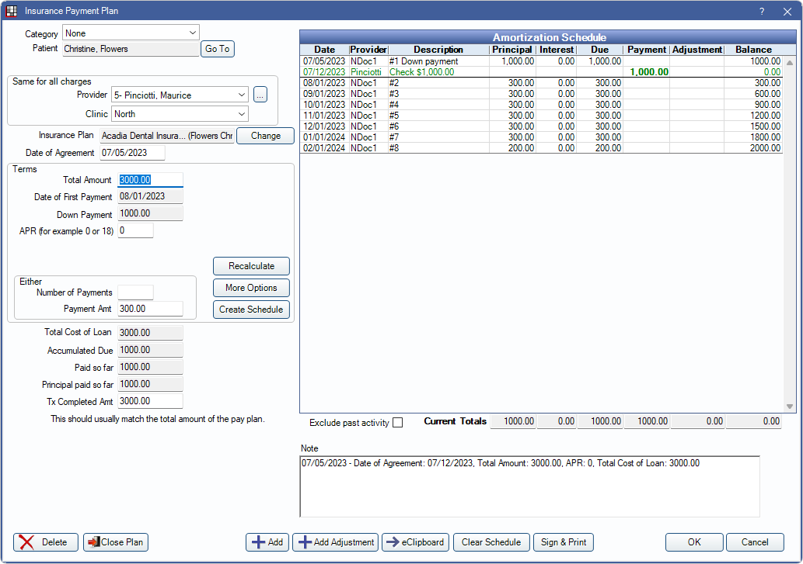
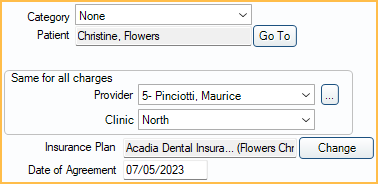
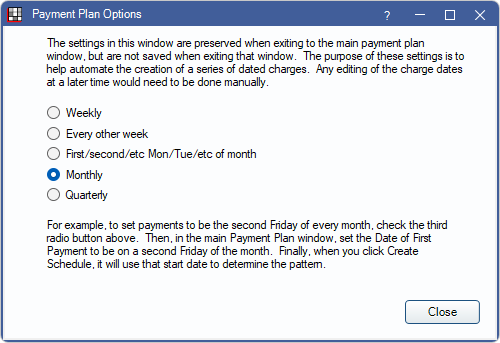
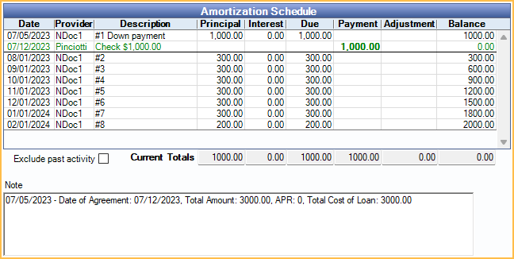
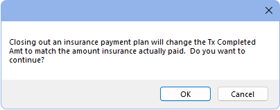

Insurance Payment Plans
Insurance Payment Plans can be used to track expected insurance payments (e.g., insurance installment payments).
In the Account Module Payment Plans grid, they show with the Type Ins.

- The grid can also list regular Payment Plans, Dynamic Payment Plans, and Installment Plans.
- Insurance Payment Plans can only be used in conjunction with Dynamic Payment Plans if using the correct setup. See Dynamic Payment Plans: Setting up a Dynamic Payment Plan for use with an Insurance Payment Plan.
- See General Setup steps at the bottom of this page.
To create a new Insurance Payment Plan, in the Account Module, click Payment Plan, Insurance Payment Plan.
General Agreement Information
Category: Assign a category to this Payment Plan (e.g., Ortho, Implant). Useful to distinguish one Payment Plan from another when families have many plans. Customize category options in Definitions: Payment Plan Categories.
Patient: The person who was treated. Click Go To to switch to their account. Patients can have multiple Payment Plans, and each plan can have a different guarantor.
Provider: Use the dropdown or click [...] to change the provider assigned to the Payment Plan.
Clinic: Use the dropdown to change the clinic assigned to the Payment Plan.
Insurance Plan: Click Change to select the insurance plan this Payment Plan is attached to, then click OK.
Date of Agreement: Defaults to today's date. This can be changed to a past date.
Terms
Terms affect the Amortization Schedule.

Total Amount: Enter the total amount of expected payments from insurance.
Date of First Payment: Enter the date the first insurance payment is received (e.g., today's date).
Down Payment: Enter the down payment amount. This is expected due immediately (i.e., Date of Agreement).
APR: Typically APR is not charged on Insurance Payment Plans. If insurance is paying interest, enter the rate here. If an amount other than 0 is entered, the following fields are available: (only one can be used at a time.)
- No interest for the first # payments: Enter a number to prevent interest from calculating until after those payments (e.g., if 3 is entered, interest is not be calculated until the fourth payment). Does not include the down payment.
- Interest start date: Type a date to prevent interest from being calculated until after the entered date.
Either: To calculate the payments, enter in one of the following:
- Number of Payments: Enter the expected number of payments from insurance.
- Payment Amt: Enter the full expected payment amount from insurance.
Recalculate: Insurance Payment Plans cannot be recalcuated.
More Options: Click to select the frequency of payments. The default frequency is Monthly.
Create Schedule: Click to create the Amoritization Schedule.
Loan Information
All fields are read-only and auto-calculated except the Tx Completed Amt field.

Total Cost of Loan: Total Amount + calculated Interest + Pay Plan Adjustments
Accumulated Due: Total payments due to date.
Paid so far: Total amount paid toward the Payment Plan to date. Payments must be attached to the Payment Plan to calculate in the total.
Principal paid so far: Total amount that has been paid towards the principal to date. Payments must be attached to the Payment Plan to calculate in the total.
Tx Completed Amt: The total amount of all insurance payments. This amount is applied as a PayPlan Credit line item with the description Expected payments from [Insurance Carrier] to the patient's account. The amount is deducted from the patient's balance.
Amortization Schedule and Note
The Amoritization Schedule is generated based on the terms. Principal and interest are calculated automatically. Due dates are based on the Date of First Payment and the frequency selected from More Options.
Exclude past activity: When checked, only future dated line items show in the Amortization Schedule and past activity is hidden. When unchecked, all activity shows. Totals are not affected by this setting. To set the default setting for the checkbox, see Preferences, Payment Plans exclude past activity by default.
Current Totals: Automatically calculated based on current and past charges, accumulated payments, and the running balance.
A horizontal bold line indicates today's date and separates past items from future items. Any amount currently due is bold. Payments attached to this plan show in the Payment column and affect the running balance. The provider column notes the last name of the provider assigned to the payment split attached to the Payment Plan.
Double-click an existing charge to edit. See Edit Pay Pan Charge section below for details.
Saving, Adjustments, Closing Plan, and More
Delete: Delete the entire Payment Plan.
Close Plan: Click to close out the Payment Plan. Do this once insurance stops making payments (i.e., pays off the claim or is no longer paying). If insurance paid less than was originally anticipated, a warning appears.
Click Yes to proceed with closing the Payment Plan. The The Tx Completed Amt is adjusted to match the Paid so far amount. Click No to return to Insurance Payment Plan window without closing the Payment Plan.
Add: Add a new Payment Plan Charge or note to the Amortization Schedule. See Edit Pay Plan Charge below.
Add Adjustment: Add a negative Payment Plan adjustment to discount a portion of the Payment Plan balance (e.g., for a courtesy discount). The Negative Pay Plan Adjustment window opens. Enter the amount to adjust off the Payment Plan.
eClipboard: Not used for Insurance Payment Plans.
Clear Schedule Click to clear the existing Amortization schedule.
Print: Click to print the Payment Plan. See Sign and Print Payment Plan.
OK: Click to close the window and save changes.
Cancel: Click to close the window without saving changes.
Edit Pay Plan Charge
Click Add to create an additional Pay Plan Charge on the Amortization Schedule or double-click an existing charge from the Amortization Schedule grid to edit.

- Date Entry: Read only. Date and time stamp when the Pay Plan Charge was originally created.
- Date Edit: Read only. Date and time stamp when the Pay Plan Charge was most recently edited.
- Date: Defaults to the date entry, but can be changed. This is that date displayed in the Amortization Schedule grid.
- Note: Displays in the Description column of the Amortization Schedule.
- Principal: Pay Plan Charge amount not including interest.
- Interest: Read only. This is automatically calculated based on Terms and Principal.
- Provider: Read only. Provider assigned to Payment Plan.
- Clinic: Read only. Clinic assigned to Payment Plan.
Click Delete to remove a charge from the Amortization Schedule. This recalculates the Total Amount.
Click OK to save changes. If adding a new charges or changing Principal amount, the Total Amount is recalculated.
General Setup
Setting up an Insurance Payment Plan:
- Create and send the insurance Claim. Each claim can only be associated with one Payment Plan.
- When the first insurance payment comes in, set up the Insurance Payment Plan before receiving the payment.
- If insurance is making a large first installment payment (this is uncommon) input this as the Down Payment.
- Input the Total Amount.
- Uncommon: Input the APR and interest information.
- Input the Number of Payments or Payment Amt.
- Click More Options and choose the payment frequency.
- Click Create Schedule to create the Amortization Schedule.
- In the Tx Completed Amt field, note the total expected principal payments from insurance (i.e, not including any interest).
- Adding the Tx Completed Amt creates a PayPlan Credit to ensure the the patient is not responsible for the amount expected to be paid by insurance.
- Receive Claim and Finalize Insurance Payment as normal.
- To receive claim payments, with interest (uncommon), see Interest on Insurance Payments
- As subsequent payments come in, receive them as Supplemental Insurance Payments.
- Once insurance has paid off the Payment Plan or stops making payments, click Close Plan.
- The user is prompted to adjust the Tx Completed Amt to the amount actually paid by insurance, so if there was any balance unpaid, it is now patient responsibility.
If the Insurance Payment Plan was created prior to receiving the first insurance payment, payments are automatically attached to the Insurance Payment Plan. If the Payment Plan is created after receiving insurance payments, users must manually mark insurance payments as attached to the Payment Plan. See Attaching Payments to an Insurance Payment Plan below for more information.
- Run the Insurance Payment Plans Past Due Report to view patients with Insurance Payment Plan amounts past due.
- Due Now column in Payment Plan grid is for patient due amounts and does not apply to Insurance Payments due.
Attaching Payments to an Insurance Payment Plan
Attaching/Detaching Payments to or from Plans: If a user creates the claim payment before the Insurance Payment Plan, payments are not automatically attached to the Payment Plan. To manually attach, open the claim payment by double-clicking the procedure to open the Claim Procedures ( claimprocs ) window, then check Attached to Insurance Payment Plan.
To detach a payment from an Insurance Payment Plan, open claim, double-click the procedure to open the Claim Procedure window, then uncheck Attached to Insurance Payment Plan.
If entering the first payment on a claim and there are multiple Insurance Payment Plans attached to the patient without payments attached, there is a prompt to select the payment plan. If only one Insurance Payment Plan without payments attached exists, the payment is automatically associated to that payment plan. Supplemental payments to the same claim are automatically attached to the same Insurance Payment Plan as the original payment.
View or Reopen Closed Payment Plans
Payment plans that have been closed are still available to view or to reopen if needed. Only open Payment Plans can be edited; changing historical information is not recommended.
To show closed Payment Plans in the Payment Plan grid:
- In the Account Module, click the Show tab.
- Check the box for Show Completed Pay Plans. This affects all workstations.
All closed plans for the patient list in the Payment Plan grid in a light text color.

To reopen a closed Payment Plan:
- Double-click the closed plan to open the Payment Plan window.
- In the lower-right, click Reopen.

Only past activity shows in the Amoritization Schedule. To reinstate the Payment Plan, a new Amoritization Schedule must be created.
Troubleshooting
When entering the insurance payment, it does not automatically attach to the Payment Plan even though there is a balance on the plan.
- First check that the Tx Completed Amt in the Insurance Payment Plan matches the Total Amount of expected payments.
- If the Tx Completed Amt is 0, you will be unable to attach the payment to the plan.